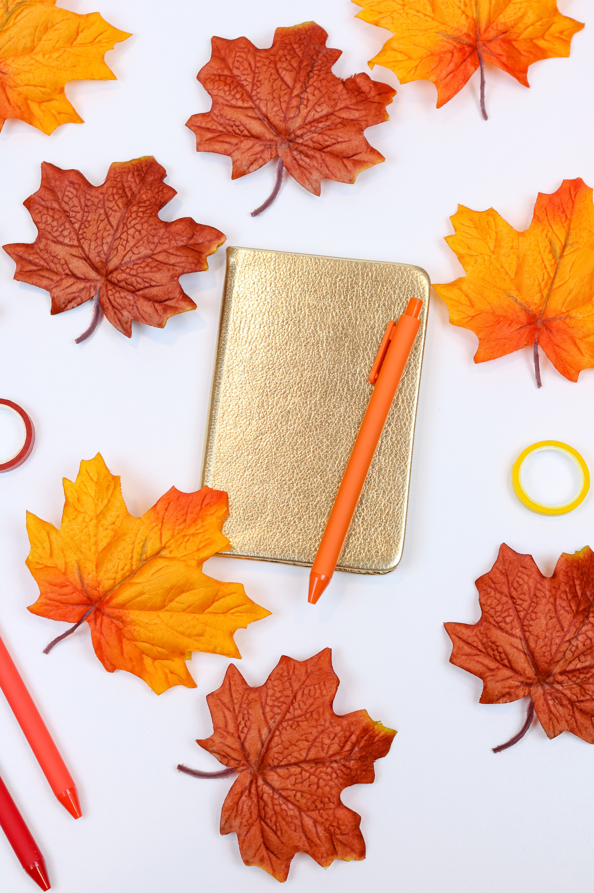
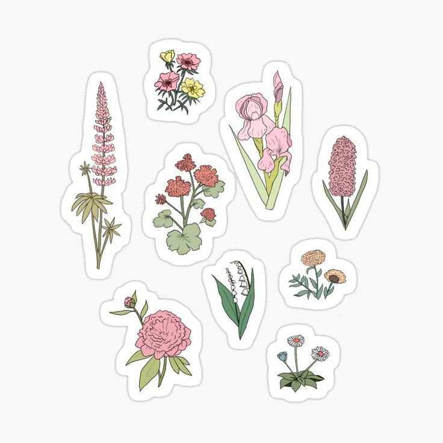

CATALOGUE
GIFTS & OBJECTS
- PRIORITIES NOTEPAD: Use this to help you get stuff done and clear your mind. 100% made in the USA. 4.25" x 8.5" 75 sheet notepad
- GRATITUDE JOURNAL: Use this journal to keep a log of all the stuff you are thankful for. Each day, jot a few notes. In a world full of chaos and despair, remember the things that are going okay - It's good for your health.
- THINGS WILL WORK OUT KEYCHAIN: An emblem of hope for the future, to carry in your pocket wherever you go. Fingers crossed. Enamel metal keychain, cream & gold 2 inch enamel charm on a 28mm ring

APPAREL
- HAT IN BLACK: We decided we needed this as a hat. We thought you might too.One size fits all. Embroidery on canvas.
- HAT IN WHITE: Embroidery on canvas. Available in black or white. Available in black (T8800) or white (T8801).

NOTEPADS & JOURNALS
- ALL THE THINGS NOTEPAD
- MEAL PLANER
- GENTLE REMINDER NOTEPAD 
- GRATITUD JOURNAL 
- LIFE JOURNAL


STICKERS
- 8 Stickers Mystery Pack
- Clear Wildflower Bunch Sticker, 3x3 in.
- Flowers
- Ross